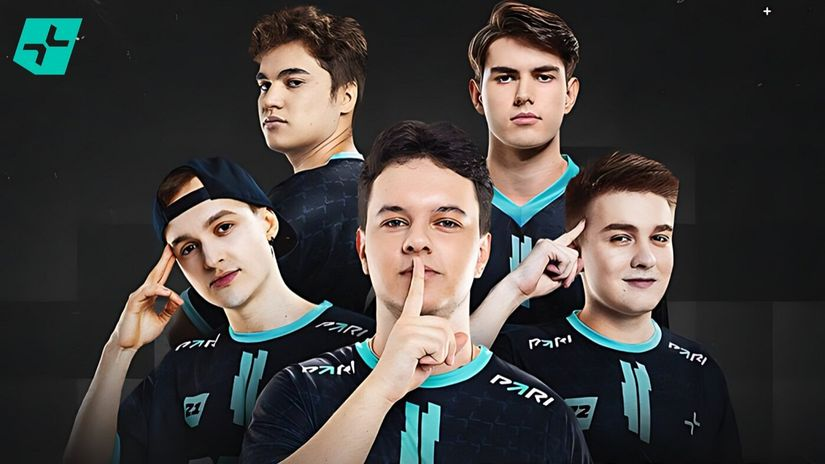

PARIVISION banovan sa EU RMR, BLEED ima novu šansu!
Novosti iz esporta
Kompanija Perfect World koja je organizator predstojećeg CS2 Shanghai Majora je izdala zvanično saopštenje da je ruski tim PARIVISION diskvalifikovan sa EU RMR i da će se umesto njih tri tima boriti za preostali slot u kvalifikacijama, među kojima je i BLEED.
Ruska ekipa se sama odala kačeći slavlje nakon kvalifikacija na EU RMR, kada je primećeno da je među igračima i trener tima Ivan "F_1N" Kochugov koji ima zabranu treniranja na zvaničnim eventovima.
Ne samo što je F_1N banovan od učestvovanja na eventovima, već je svakako i igračima tokom EU RMR kvalifikacijama bilo zabranjeno da se bilo ko nalazi sem njih u sobi iz koje igraju, što je PARIVISION višestruko prekršio jer je pored spornog trenera tu bilo i nekoliko članova organizacije.
Podsetimo, F_1N je jedan od preko 30 trenera koji su 2020. godine uhvaćeni da su koristili bag koji je omogućavao trenerima da vide šta se dešava na map, a pošto je otkriveno da je to uradio u čak šest zvaničnih mečeva, dobio je ban za stalno direktno od Valvea.
Za mesto koje se oslobodilo boriće se Monte, KOI i BLEED. BLEED ide direktno u finale baraža ,i igraće sa boljim iz meča KOI - Monte za odlazak na EU RMR, I BLEED i KOI su prokockali 2-0 start na EU RMR kvalifikacijama, tako da će ovo biti ogromna prilika za bar jedan od ova dva tima da popravi učinak i neočekivano se ipak nađe u borbi za odlazak na Major.